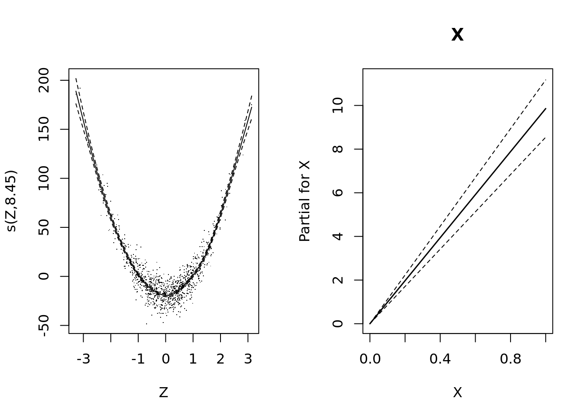
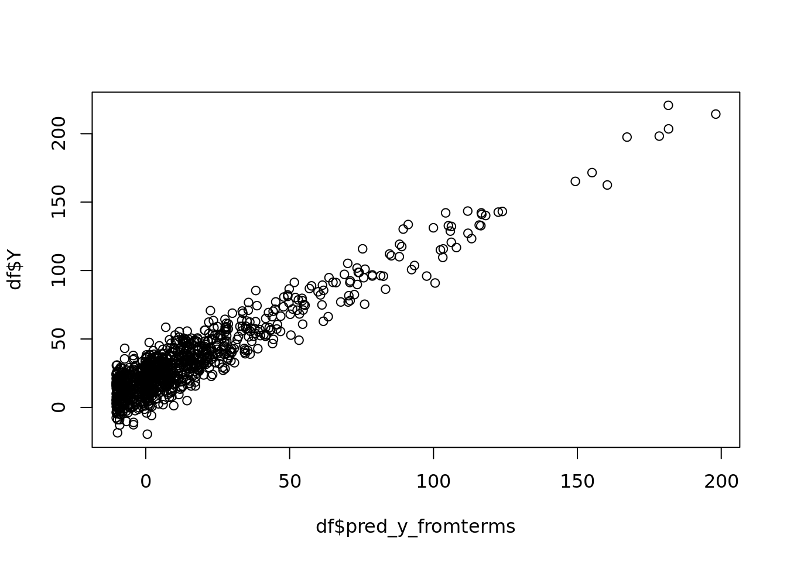
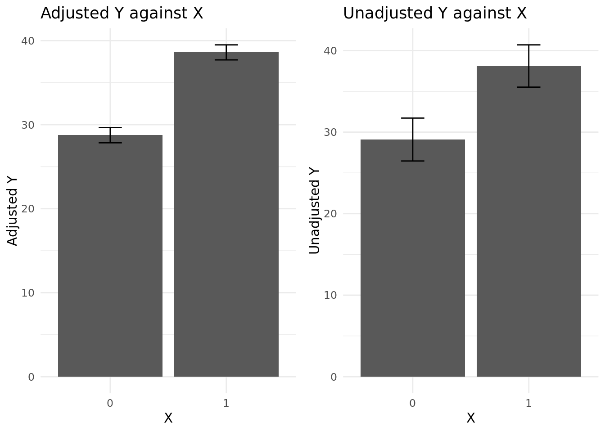

library(mgcv)
library(dplyr)
n <- 1000
x <- rbinom(n, 1, 0.5)
z <- rnorm(n, mean = 0, sd = 1)
b0 <- 10
b1 <- 10
b2 <- 20
y <- b0 + b1 * x + b2 * z^2 + rnorm(n, mean = 0, sd = 10)
df <- data.frame(Y = y, X = x, Z = z)
gam_model <- gam(Y ~ X + s(Z), data = df, method = "REML")Normalising Data Using Generalised Additive Models
Summary
Here I explore a way to normalise data by partialling out the effect of a potential confounding variable using generalised additive models (GAM). This is useful when we want to adjust for confounders but we don’t know in advance the functional form of their relationships with the dependent variable. Of course, the GAM modelling results straightforwardly provide us with adjusted coefficients for all the variables in the model, and for most practical purposes this is sufficient. However, it may be that we would like to graphically plot relationships between the dependent variable and the individual covariates, and do so in a way that isolates their effects from those of other variables. Additionally, we might want to use this adjusted quantity for some downstream inference task, such as sorting observations by adjusted values and characterising top and bottom groups. So here I use mgcv to fit a GAM to some simulated data and explore how we can carry out this kind of normalisation.
Built in capacity for “partialling out” in mgcv
It’s worth noting that if plotting is the goal, the plot.gam function does provide some basic functionality for this. Let’s first simulate some data and fit a GAM to it, then we can see what tools are available.
Let’s start with a relatively simple model:
\[ y = b_0 + b_1 x + b_2 z^2 + \epsilon \]
with \(x \sim \text{Bernoulli}(0.5)\), \(z \sim \mathcal{N}(2, 1)\), and \(\epsilon \sim \mathcal{N}(0, 100)\).
The form is somewhat arbitrary, except that we have a non-linear term in \(z\) to demonstrate some of the advantages of using a GAM over a GLM. I have also made the error term fairly large to keep the p-value from being too small for meaningful comparisons.
I mentioned that there are we can use the plot.gam function to visualise individual relationships. We can use the all.terms argument for this purpose.
Code
plot(gam_model, pages = 1, all.terms = TRUE, rug = FALSE, residuals = TRUE)
These plots are OK, although they use the base R plotting system and are not very customisable. They also do not show results on a familiar scale, which reduces their immediate interpretability.
Beyond plot.gam
The approach I want to pursue is to generate derived quantities that we can do whatever we like with. Once we have the partial predictions for each row, we can store them and treat them as data, plotting them or otherwise analysing them as we like.
preds <- predict(gam_model, type = "terms") |>
as.data.frame() |>
setNames(c("pred_x", "pred_z"))
df <- cbind(df, preds)On its own, this is not very informative. The pp object contains the predictions for each row of the data, but they are not on a scale that is immediately interpretable. We need to add back the intercept and the effect of \(Z\) to get the “normalised” \(Y\).
| Y | X | Z | pred_x | pred_z |
|---|---|---|---|---|
| 48.94352 | 1 | -1.0221207 | 9.85626 | 2.552670 |
| 27.44250 | 0 | 0.6785096 | 0.00000 | -9.234057 |
| 36.95893 | 1 | 0.2136389 | 9.85626 | -18.738867 |
| 96.25313 | 1 | 1.9939274 | 9.85626 | 62.564750 |
| 36.72771 | 0 | 1.0673085 | 0.00000 | 3.438250 |
| 59.32940 | 1 | 1.3419030 | 9.85626 | 15.672172 |
# Get the predicted values at the mean of Z since the 'terms' effects are
# relative to the mean effects (for smoothed terms), which are themselves
# absorbed into the intercept
z_mean_effect <- predict(
gam_model, newdata = data.frame(X = 0, Z = mean(df$Z))
)
# for reasons unclear tp me, getting the intercept via coefs(gam_model) gives a
# result that is off by +b2, so just calculating it directly
intercept <- predict(gam_model, newdata = data.frame(X = 0, Z = 0))
z_mean_effect <- z_mean_effect - intercept
# Now calculate the "normalised" Y by subtracting the effect of Z
df$z_eff_pred_y <- df$pred_z + z_mean_effect
df$y_adj_z <- y - df$z_eff_pred_y
# check everything so far is correct by making sure we can reconstruct approx
# the true Y from the estimated components
df$x_eff_pred <- df$pred_x
df$pred_y_fromterms <- intercept + df$x_eff_pred + df$z_eff_pred_y
plot(df$pred_y_fromterms, df$Y) # straight line, so component terms are correct
#summary(gam_model)
#summary(lm(y_adj_z ~ X, data = df))